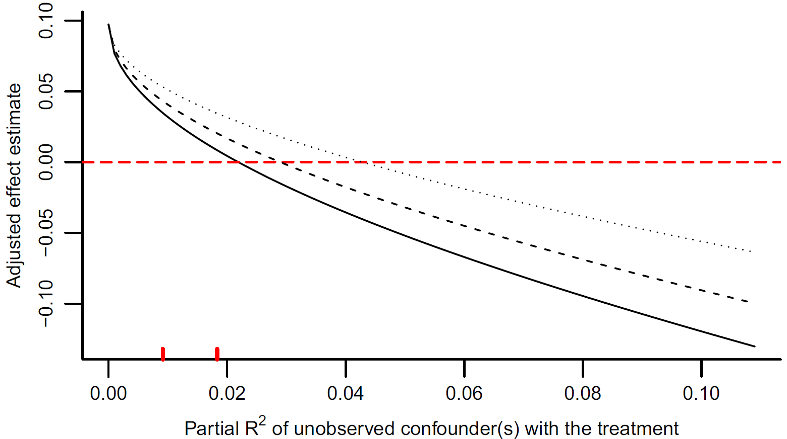
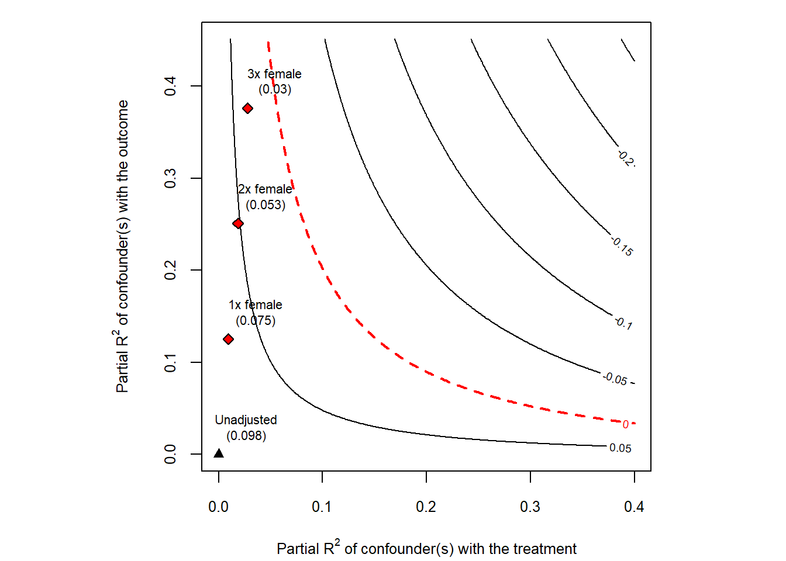
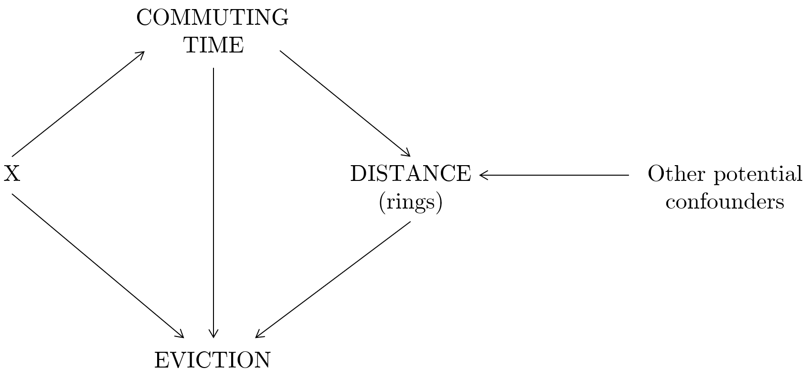
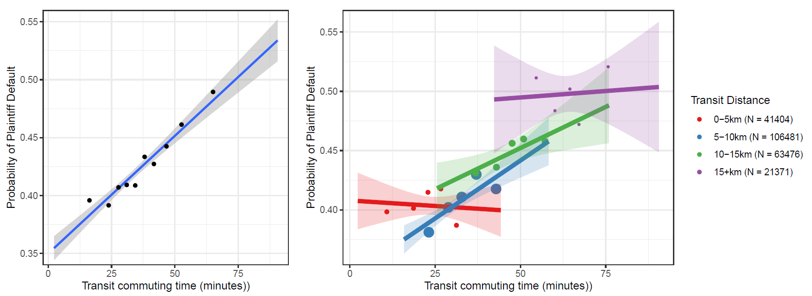
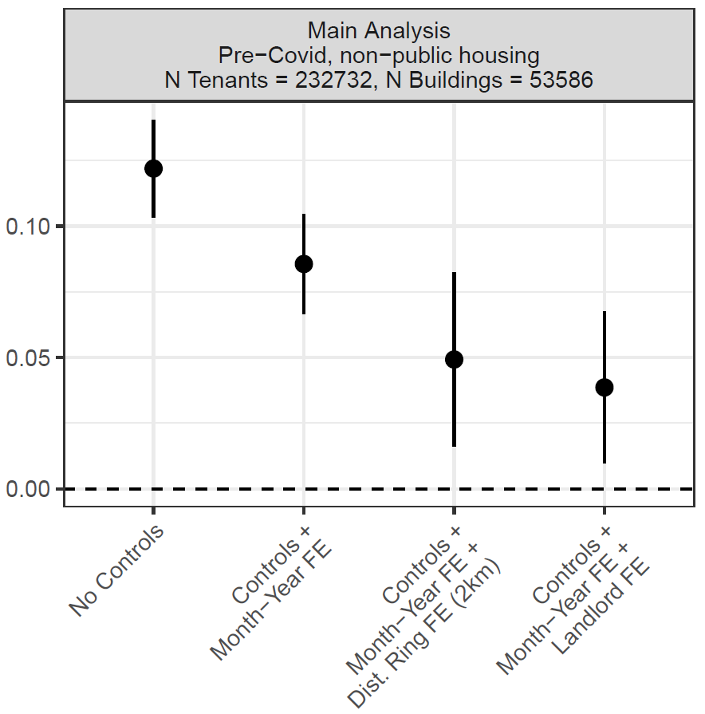
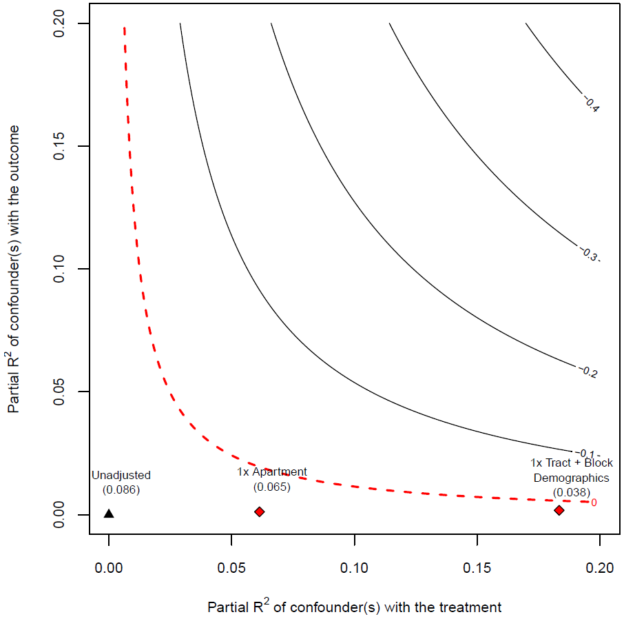

In this chapter, we review some foundational results in regression analysis and use them to assess the sensitivity of our estimates to the potential presence of unobserved/unobservable confounding variables. This nicely brings together directed acyclical graphs, the Frisch-Waugh-Lovell theorem, the omitted variable bias and something as basic as \(R^2\)!
As in Chapter 1, I will try to combine proofs of key results with simulations and examples, so that by the end of this chapter you might feel confident in your understanding.
4.1 Omitted Variable Bias (OVB) and Unobserved Confounders (source: Hansen)
The OVB formula helps us thinking about how failing to include an important variable in our causal regression affects our estimate of the treatment effect. Following MHE’s example, say we want to estimate the causal effect of schooling on income, and have the following true unobservable data generating process (DGP):
where where \(\delta_{\boldsymbol{A} \boldsymbol{S}}\) is the vector of \(K\) coefficients from \(K\) regressions of the elements of \(\boldsymbol{A}\) on \(S_i\) — one per element: \[
A_{k,i} = \eta_{k} + \delta_{k} \mathrm{S}_{i} + \epsilon_{k,i}.
\] To see how Equation Equation 4.3 is derived, simply plug the “long” Equation 4.1 into the “short regression equation” Equation 4.2:
\[
\begin{aligned}
\hat{\rho} &=\left(\mathbb{E}\left[S_{i} S_{i}^{\prime}\right]\right)^{-1} \mathbb{E}\left[S_{i} Y\right] \quad \text { by definition of OLS (matrix notation)}\\
&=\left(\mathbb{E}\left[S_{i} S_{i}^{\prime}\right]\right)^{-1} \mathbb{E}\left[S_{i}\left(S_{i}^{\prime} \rho+\boldsymbol{A}_{i}^{\prime} \boldsymbol{\gamma}+e_i \right)\right] \quad \text {plugging in the true DGP} \\
&=\rho+\left(\mathbb{E}\left[S_{i} S_{i}^{\prime}\right]\right)^{-1} \mathbb{E}\left[S_{i} \boldsymbol{A}_{i}^{\prime}\right] \boldsymbol{\gamma} \quad \text {multiplying and using OLS def.}\\
&=\rho+ \boldsymbol{\gamma}^{\prime}\delta_{\boldsymbol{A} \boldsymbol{S}} \\
\end{aligned}
\tag{4.4}\] Inspecting the OVB formula, we can notice that in order to introduce bias, the omitted variable must be (i) correlated with the variable of interest, \(S_i\), i.e. \(\delta_{\boldsymbol{A} \boldsymbol{S}} \neq 0\); and (ii) the true effect of the ability variables should be non-zero, i.e. \(\boldsymbol{\gamma} \neq 0\). In other words, the omitted variable must be a confounder, affecting both treatment and outcome (see the DAG below). Notice also that if we suspect the presence of omitted variable bias, we can determine whether it is upward or downward bias, based on our knowledge of the partial correlations of confounder and treatment (\(\delta_{\boldsymbol{A} \boldsymbol{S}}\)), and of confounder and outcome (\(\boldsymbol{\gamma}\)).
Figure 4.1: DAG illustrating omitted variable bias
Let’s see this in action using a simple simulation:
Code
# OMITTED CONFOUNDER: BIASn =10000# True value of the regression parametersalpha = beta = gamma =1z =rnorm(n,0,1)eps.x =rnorm(n,0,1)eps.y =rnorm(n,0,1)x = alpha*z + eps.xy = beta*x + gamma*z + eps.y# Estimate short regression with z omittedcoef(lm(y~x))[2]
x
1.504382
Code
# OMITTED NON-CONFOUNDER: NO BIAS - but less precision (need s.e.)# x not correlated with z anymorex =rnorm(n,0,1)eps.y =rnorm(n,0,1)y = beta*x + gamma*z + eps.y# Estimate short regression with z omittedcoef(lm(y~x))
(Intercept) x
-0.005665183 1.000718735
Code
coef(lm(y~x+z))
(Intercept) x z
0.001958941 1.003861655 1.011256618
where \({S_i}^{\perp \mathbf{A}}\) is the residual of a regression of \(S_i\) on \(A_i\) and \({Y_i}^{\perp \mathbf{A}}\) is the residual of a regression of \(Y_i\) on \(A_i\).
We already proved the equivalence between 1 and 2 via the OVB formula (convince yourself that this is the case). We will now prove that 1 and 3 are equivalent, and we will do this by proving the Frisch-Waugh-Lovell (FWL) Theorem. This will be used later for a quick alternative proof of the OVB by Cinelli and Hazlett (2020).
Before jumping to the proof, let’s take the FWL to be true and apply it in a simulation. Given the DGP \[
Y_{i}=\beta_{1} D_{i}+\beta_{2} X_{i}+\varepsilon_{i}
\] the OLS estimator of \(\beta_{1}\) and can be found using the following algorithm:
Regress \(\boldsymbol{Y}\) on \(\boldsymbol{X}\), obtain residuals \(\boldsymbol{Y}^{\perp \mathbf{X}}\);
Regress \(\boldsymbol{D}\) on \(\boldsymbol{X}\), obtain residuals \(\boldsymbol{D}^{\perp \mathbf{X}}\);
Regress \(\boldsymbol{Y}^{\perp \mathbf{X}}\) on \(\boldsymbol{D}^{\perp \mathbf{X}}\), obtain OLS estimates \(\widehat{\beta}_{1}\) and residuals \(\widehat{\boldsymbol{\varepsilon}}\).
As Chernozukov says it in his notes, “[FWL] asserts that \(\beta_{1}\) is a regression coefficient of \(Y\) on \(D\) after partialing-out the linear effect of \(X\) from \(Y\) and \(D\). In other words, it measures linearly the predictive effect (PE) of \(D\) on \(Y\), after taking out the linear predictive effect of \(X\) on both of these variables.”
Code
set.seed(89)## Generate random datadf <-data.frame(y =rnorm(1000,2,1.5),x1 =rnorm(1000,1,0.3),x2 =rnorm(1000,1,4))## Partial regressions# Residual of y regressed on x1y_res <-lm(y ~ x1, df)$residuals# Residual of x2 regressed on x1x_res <-lm(x2 ~ x1, df)$residualsresids <-data.frame(y_res, x_res)## Compare the beta values for x2# Multivariate regression:summary(lm(y~x1+x2, df))
Call:
lm(formula = y ~ x1 + x2, data = df)
Residuals:
Min 1Q Median 3Q Max
-4.451 -1.001 -0.039 1.072 5.320
Coefficients:
Estimate Std. Error t value Pr(>|t|)
(Intercept) 2.33629 0.16427 14.222 <2e-16 ***
x1 -0.31093 0.15933 -1.952 0.0513 .
x2 0.02023 0.01270 1.593 0.1116
---
Signif. codes: 0 '***' 0.001 '**' 0.01 '*' 0.05 '.' 0.1 ' ' 1
Residual standard error: 1.535 on 997 degrees of freedom
Multiple R-squared: 0.006252, Adjusted R-squared: 0.004258
F-statistic: 3.136 on 2 and 997 DF, p-value: 0.04388
Call:
lm(formula = y_res ~ x_res, data = resids)
Residuals:
Min 1Q Median 3Q Max
-4.451 -1.001 -0.039 1.072 5.320
Coefficients:
Estimate Std. Error t value Pr(>|t|)
(Intercept) -1.302e-16 4.850e-02 0.000 1.000
x_res 2.023e-02 1.270e-02 1.593 0.111
Residual standard error: 1.534 on 998 degrees of freedom
Multiple R-squared: 0.002538, Adjusted R-squared: 0.001538
F-statistic: 2.539 on 1 and 998 DF, p-value: 0.1114
4.2.2 Review of the Proof (re-using Fangzhuo’s notes)
(Borrowed from Professor Victor Chernozhukov’s notes)
In Econometric analysis, it is common to have some parameters of interest out of all regression coefficients. We partition all regressors \(W\) into two groups \[
W = (D, X)
\] where \(D\) is our variable of interest with dimension \(p_1\) and \(X\) is the covariates with dimension \(p_2\). We consider the linear projection model \[
Y = D\tau + X\beta + \epsilon
\tag{4.5}\] The interpretation of \(\tau\) is the partial effect of \(D\) on \(Y\). In this chapter, we explore the math behind this interpretation.
Define the partialling-out operator in population with respect to \(X\) (a generic \(X\)) under the assumption of the existence of linear projection coefficient \[
{V}^{\perp \mathbf{X}} = V - X\gamma_{vx}, \quad \gamma_{vx} = \arg \min_b \mathbb{E}[(V - Xb)^2]
\] This partialling-out operator is a linear operator \[
Y = V + U \rightarrow {Y}^{\perp \mathbf{X}} = {V}^{\perp \mathbf{X}} + {U}^{\perp \mathbf{X}}
\] Proof:
\[\begin{equation}
\begin{aligned}
{U}^{\perp \mathbf{X}} + {V}^{\perp \mathbf{X}} &= U - X\gamma_{ux} + V - X\gamma_{vx} \\
&= U - X(X'X)^{-1}X'U + V - X(X'X)^{-1}X'V \\
&= U + V - X(X'X)^{-1}X'(U + V) \\
&= (U + V)^{\perp \mathbf{X}} \\
\end{aligned}
\end{equation}\]
We apply this partialling-out operator to model Equation 4.5 to get \[
{Y}^{\perp \mathbf{X}} = {D}^{\perp \mathbf{X}}\tau + {X}^{\perp \mathbf{X}}\beta + \epsilon^{\perp \mathbf{X}}
\] which implies \[
{Y}^{\perp \mathbf{X}} = {D}^{\perp \mathbf{X}}\tau + \epsilon
\tag{4.6}\] because \({X}^{\perp \mathbf{X}} = 0\) and \(\epsilon^{\perp \mathbf{X}} = \epsilon\), which holds by the property of projection error \(\mathbb{E}[\epsilon X]\).
For this new linear projection model in Equation 4.6, by solving \(\mathbb{E}[{D}^{\perp \mathbf{X} \prime}\epsilon] = 0\), we have \[
\tau = \mathbb{E}[{D}^{\perp \mathbf{X} \prime}{D}^{\perp \mathbf{X}}]^{-1}\mathbb{E}[{D}^{\perp \mathbf{X} \prime}Y]
\] This is the “partial effect” of \(D\) on \(Y\). This result is also known as the Frisch-Waugh-Lovell theorem.
Similarly, we can also define the partialling-out operator in sample\[
\check{V}^{\perp \mathbf{X}} = V - X\hat\gamma_{vx}, \quad \hat\gamma_{vx} = \arg \min_b \frac1n \sum_{i = 1}^n(V - Xb)^2
\] And the estimator of \(\tau\) is \[
\hat\tau = (\check{D}^{\perp \mathbf{X} \prime}\check{D}^{\perp \mathbf{X}})^{-1}(\check{D}^{\perp \mathbf{X} \prime}\check{Y})
\] which is the sample version of FWL theorem.
4.3 OVB as a Function of \(R^2\): Cinelli & Hazlett (2020)
Now that we have internalised the OVB issues using the education example, let’s rexpress the problem in a more general form, following the notation used in Cinelli & Hazlett (2020). Copy-pasting from their paper:
Suppose that an investigator wishes to run a linear regression model of an outcome \(Y\) on a treatment \(D\), controlling for a set of covariates given by \(\mathbf{X}\) and \(Z\), as in
where \(Y\) is an \(n \times 1\) vector containing the outcome of interest for each of the \(n\) observations and \(D\) is an \(n \times 1\) treatment variable (which may be continuous or binary); \(\mathbf{X}\) is an \(n \times p\) matrix of observed (pretreatment) covariates including the constant; and \(Z\) is a single \(n \times 1\) unobserved covariate (we allow a multivariate version of \(Z\) in Section 4.5). However, since \(Z\) is unobserved, the investigator is forced instead to estimate a restricted model:
where \(\hat{\tau}_{\text {res }}\) and \(\hat{\boldsymbol{\beta}}_{\text {res }}\) are the coefficient estimates of the restricted ordinary least squares with only \(D\) and \(\mathbf{X}\), omitting \(Z\), and \(\hat{\varepsilon}_{\text {res }}\) its corresponding residual.
of a sample estimate and a population value. Using the Frisch-Waugh-Lovell theorem (Frisch and Waugh, 1933; Lovell, 1963, 2008) to ‘partial out’ the observed covariates \(\mathbf{X}\), the classical OVB solution is
where \(\operatorname{cov}(\cdot)\) and \(\operatorname{var}(\cdot)\) denote the sample covariance and variance; \(Y^{\perp \mathbf{X}}, D^{\perp \mathbf{X}}\) and \(Z^{\perp \mathbf{X}}\) are the variables \(Y, D\) and \(Z\) after removing the components linearly explained by \(\mathbf{X}\) and we define \(\hat{\delta}:=\operatorname{cov}\left(D^{\perp \mathbf{X}}, Z^{\perp \mathbf{X}}\right) / \operatorname{var}\left(D^{\perp \mathbf{X}}\right)\). We then have
4.3.1 Relationship between Correlation and \(R^2\)
The OVB is usually expressed as a function of the covariance between treatment and omitted variables, once both partialled out of the included variables (see Equation 4.9). Cinelli & Hazlett (2020) exploit the relationship that correlation have with \(R^2\) to re-parametrise the OVB in terms of \(R^2\).
Their result is brilliant but mostly derived using tedious algebra, so I will limit myself to reviewing the relationship between \(R^2\) and correlation, which I will follow with a discussion of their result and a recent example from the literature.
Notation: define the partial \(R^{2}\) from regressing \(Z\) on \(D\) after controlling for \(\mathbf{X}\) as \(R_{Z \sim D \mid \mathbf{X}}^{2}\). Now we can reparametrise the OVB as follows:
\[
\mid \widehat{\text{bias}} \mid = \sqrt{\left( \frac{\color{blue}R_{Y \sim Z \mid D, \mathbf{X}}^{2} \color{red} R_{D \sim Z \mid \mathbf{X}}^{2}}{1- \color{red}R_{D \sim Z \mid \mathbf{X}}^{2}}\right)} \frac{\operatorname{sd}\left(Y^{\perp \mathbf{X}, D}\right)}{\operatorname{sd}\left(D^{\perp \mathbf{X}}\right)}
\tag{4.11}\]
\[\begin{equation}
\text { relative bias }= |\frac{\widehat{\mathrm{bias}}}{\hat{\tau}_{\text {res }}} =
\frac{\overbrace{\left|R_{Y \sim Z \mid D, \mathbf{X}} f_{D \sim Z \mid \mathbf{X}}\right|}^{\text {bias factor }}}
{\underbrace{\left|f_{Y \sim D \mid \mathbf{X}}\right|}_{\text {partial } f \text { of } D \text { with } Y}}
=\frac{\mathrm{BF}}{\left|f_{Y \sim D|\mathbf{X}|}\right|} \text {. }
\end{equation}\] “To determine the size of the relative bias, this is compared with how much variation of the outcome is uniquely explained by the treatment assignment”
\[
\text{Cohen's $f$: }f^{2}=R^{2} /\left(1-R^{2}\right)
\] and we can compute it this way, which makes it easy to check robustness in published papers: Cohen’s \(f\): \[
f_{Y \sim D \mid \mathbf{X}}=\frac{t_{\hat{\tau}_{\mathrm{res}}}}{\sqrt{\mathrm{df}}}
\]
4.3.2.2 Robustness Value
It helps us thinking about how strong (predictive of the outcome) one or many confounders would need to be in order to make our treatment effect zero.
“where \(f_{q}:=q\left|f_{Y \sim D \mid \mathbf{X}}\right|\) is the partial Cohen’s \(f\) of the treatment with the outcome multiplied by the proportion of reduction \(q\) on the treatment coefficient which would be deemed problematic. Confounders that explain \(\mathrm{RV}_{q} \%\) both of the treatment and of the outcome are sufficiently strong to change the point estimate in problematic ways, whereas confounders with neither association greater than \(\mathrm{RV}_{q} \%\) are not.”
\(\mathrm{RV}_{q}\) is bounded between zero and one: close to zero, even weak confounders could drive the TE estimates to zero; close to one, the TE estimates are robust to strong confounders—strong enough to explain close to all residual variation of both treatment and outcome.
…

4.4 Sensitivity Analysis in Practice with sensemakr
The sensemakr R package (cinelli2020sensemakr?) is the companion software for Cinelli & Hazlett (2020). It implements all of the sensitivity measures discussed above—the bias formulas in terms of partial \(R^2\), the robustness value, and the contour plots—in a single, easy-to-use interface. The package is available on CRAN and actively maintained.
We demonstrate sensemakr using its built-in darfur dataset, which contains data from a survey of Darfurian refugees. The question is whether being directly exposed to violence (directlyharmed) affects attitudes toward peace (peacefactor), controlling for demographic covariates.
Code
library(sensemakr)# Estimate the effect of directlyharmed on peacefactormodel <-lm(peacefactor ~ directlyharmed + age + farmer_dar + herder_dar + pastvoted + female + village, data = darfur)# Run sensitivity analysis# benchmark_covariates: use "female" as a reference for confounder strength# kd = 1:3: consider confounders 1x, 2x, 3x as strong as "female"sens <-sensemakr(model = model,treatment ="directlyharmed",benchmark_covariates ="female",kd =1:3)summary(sens)
Sensitivity Analysis to Unobserved Confounding
Model Formula: peacefactor ~ directlyharmed + age + farmer_dar + herder_dar +
pastvoted + female + village
Null hypothesis: q = 1 and reduce = TRUE
-- This means we are considering biases that reduce the absolute value of the current estimate.
-- The null hypothesis deemed problematic is H0:tau = 0
Unadjusted Estimates of 'directlyharmed':
Coef. estimate: 0.0975
Standard Error: 0.0232
t-value (H0:tau = 0): 4.1948
Sensitivity Statistics:
Partial R2 of treatment with outcome: 0.022
Robustness Value, q = 1: 0.139
Robustness Value, q = 1, alpha = 0.05: 0.0766
Verbal interpretation of sensitivity statistics:
-- Partial R2 of the treatment with the outcome: an extreme confounder (orthogonal to the covariates) that explains 100% of the residual variance of the outcome, would need to explain at least 2.2% of the residual variance of the treatment to fully account for the observed estimated effect.
-- Robustness Value, q = 1: unobserved confounders (orthogonal to the covariates) that explain more than 13.9% of the residual variance of both the treatment and the outcome are strong enough to bring the point estimate to 0 (a bias of 100% of the original estimate). Conversely, unobserved confounders that do not explain more than 13.9% of the residual variance of both the treatment and the outcome are not strong enough to bring the point estimate to 0.
-- Robustness Value, q = 1, alpha = 0.05: unobserved confounders (orthogonal to the covariates) that explain more than 7.66% of the residual variance of both the treatment and the outcome are strong enough to bring the estimate to a range where it is no longer 'statistically different' from 0 (a bias of 100% of the original estimate), at the significance level of alpha = 0.05. Conversely, unobserved confounders that do not explain more than 7.66% of the residual variance of both the treatment and the outcome are not strong enough to bring the estimate to a range where it is no longer 'statistically different' from 0, at the significance level of alpha = 0.05.
Bounds on omitted variable bias:
--The table below shows the maximum strength of unobserved confounders with association with the treatment and the outcome bounded by a multiple of the observed explanatory power of the chosen benchmark covariate(s).
Bound Label R2dz.x R2yz.dx Treatment Adjusted Estimate Adjusted Se
1x female 0.0093 0.1253 directlyharmed 0.0752 0.0219
2x female 0.0185 0.2507 directlyharmed 0.0527 0.0203
3x female 0.0278 0.3762 directlyharmed 0.0300 0.0186
Adjusted T Adjusted Lower CI Adjusted Upper CI
3.4418 0.0323 0.1181
2.5939 0.0128 0.0926
1.6099 -0.0066 0.0666
The summary reports the estimated treatment effect, its robustness value (\(\mathrm{RV}_q\)), and how the estimate changes under different assumptions about confounder strength (benchmarked against female).
The contour plot below visualises the sensitivity of the point estimate to hypothetical confounders characterised by their partial \(R^2\) with the treatment and the outcome. The red contour marks the combinations that would drive the estimate to zero.
Code
plot(sens)

Figure 4.2: Sensitivity contour plot for the Darfur example. Each contour line shows combinations of confounder strength (partial R-squared with treatment and outcome) that would change the estimate to that value. The diamond markers show the benchmarks based on the covariate ‘female’ at 1x, 2x, and 3x its strength.
Alternative: Oster (2019) Coefficient Stability
An alternative and widely used approach to sensitivity analysis is (oster2019unobservable?), who proposes bounding treatment effects by examining how coefficient estimates and \(R^2\) values move as controls are added. The key idea is to use the degree of selection on observables (captured by \(R^2\) movements) to bound the degree of selection on unobservables. Oster’s method is implemented in Stata (psacalc) and in R via the robomit package.
4.4.1 Example: Hoffman & Strezhnev (2022)
A very nice paper, convincingly answering an important policy question using, yes, good data, but also simple OLS regressions with smart specifications and identification arguments.
I also really like this paper for its visualisations of the data and the estimates (see the use of binning in plots). The only minor issue I had with it is that it speaks the language of DAGs but does not show one, making the reader mentally visualising them as they present their empirical specifications.



They write:
The “robustness value” as defined by Cinelli and Hazlett \((2020)\) is \(3.5\) percent. In other words, any hypothetical confounder that would eliminate our results would need to explain at least \(3.5\) percent of the residual variance in both the treatment and the outcome. While this may seem small, it is actually quite a bit larger than the residual variance explained by some of our most salient confounders. Eviction court outcomes are extremely noisy and even highly relevant census-block-level demographic covariates only explain a fraction of the variation. […] We […] consider a confounder that has an association with treatment and an outcome no larger than that of all of our tract and block-level demographic covariates (income, rent and racial demographics). Such a confounder would explain a reasonable fraction of the residual treatment but, it turns out, very little of the residual outcome. […] we do not believe a potential confounder would be likely to explain away much of the outcome variance since even our strongest covariates can explain barely 0.2 percent of the residual variance

Further Reading
Cinelli & Hazlett (2020), “Making Sense of Sensitivity: Extending Omitted Variable Bias,” Journal of the Royal Statistical Society: Series B. The foundational paper for the \(R^2\)-based sensitivity framework and robustness value.
sensemakr R package (Cinelli, Ferwerda & Hazlett). Available on CRAN. Companion software with vignettes and tutorials.
Oster (2019), “Unobservable Selection and Coefficient Stability,” Journal of Business & Economic Statistics. A widely used alternative based on coefficient movements and \(R^2\) changes as controls are added.
Masten & Poirier (2021), “Identification of Treatment Effects under Conditional Partial Independence,” Econometrica. A complementary sensitivity framework based on relaxing conditional independence assumptions.
Diegert, Masten & Poirier (2022), “Assessing Omitted Variable Bias when the Controls are Endogenous.” Extends sensitivity analysis to IV settings.
Source Code
# Sensitivity AnalysisIn this chapter, we review some foundational results in regression analysis and use them to assess the sensitivity of our estimates to the potential presence of unobserved/unobservable confounding variables.This nicely brings together directed acyclical graphs, the Frisch-Waugh-Lovell theorem, the omitted variable bias and something as basic as $R^2$!As in Chapter 1, I will try to combine proofs of key results with simulations and examples, so that by the end of this chapter you might feel confident in your understanding. ## Omitted Variable Bias (OVB) and Unobserved Confounders (source: Hansen)The OVB formula helps us thinking about how failing to include an important variable in our causal regression affects our estimate of the treatment effect.Following MHE's example, say we want to estimate the causal effect of schooling on income, and have the following true unobservable data generating process (DGP):$$\mathrm{Y}_{i}=\alpha + \rho \mathrm{S}_{i} + \boldsymbol{A_{i}}^{\prime}\boldsymbol{\gamma} + e_{i},$$ {#eq-long}where $Y_i$ is income, $S_i$ is schooling and $\boldsymbol{A_{i}}$ is a vector of ability variables, of length $K$.However, we estimate $$\mathrm{Y}_{i}=\tilde{\alpha} + \tilde{\rho} \mathrm{S}_{i} + \tilde{e}_{i}.$$ {#eq-short}Then, the OVB formula tells us how this omission will affect our estimate of interest $\hat{\rho}$. More precisely,$$\hat{\rho} = \frac{\operatorname{Cov}\left(\mathrm{Y}_{i}, \mathrm{~S}_{i}\right)}{V\left(\mathrm{~S}_{i}\right)}=\rho+\boldsymbol{\gamma}^{\prime} \delta_{\boldsymbol{A} \boldsymbol{S}}$$ {#eq-ovb}where where $\delta_{\boldsymbol{A} \boldsymbol{S}}$ is the vector of $K$ coefficients from $K$ regressions of the elements of $\boldsymbol{A}$ on $S_i$ --- one per element:$$A_{k,i} = \eta_{k} + \delta_{k} \mathrm{S}_{i} + \epsilon_{k,i}.$$To see how Equation @eq-ovb is derived, simply plug the "long"@eq-long into the "short regression equation" @eq-short:<!-- Deprecated derivation (kept for reference):\begin{align}\hat{\rho} &= \frac{\operatorname{Cov}\left(\mathrm{Y}_{i}, \mathrm{~S}_{i}\right)}{V\left(\mathrm{~S}_{i}\right)} \\ &= \frac{\mathrm{E}[(S_i - \mathrm{E}[S_i])(Y_i - \mathrm{E}[Y_i])]}{\mathrm{E}[(Y_i - \mathrm{E}[Y_i])(Y_i - \mathrm{E}[Y_i])]} \\ &= \frac{\mathrm{E}[(S_i - \mathrm{E}[S_i])]}{\mathrm{E}[(Y_i - \mathrm{E}[Y_i])]} \quad \text { by simplification }\end{align}-->$$\begin{aligned}\hat{\rho} &=\left(\mathbb{E}\left[S_{i} S_{i}^{\prime}\right]\right)^{-1} \mathbb{E}\left[S_{i} Y\right] \quad \text { by definition of OLS (matrix notation)}\\&=\left(\mathbb{E}\left[S_{i} S_{i}^{\prime}\right]\right)^{-1} \mathbb{E}\left[S_{i}\left(S_{i}^{\prime} \rho+\boldsymbol{A}_{i}^{\prime} \boldsymbol{\gamma}+e_i \right)\right] \quad \text {plugging in the true DGP} \\&=\rho+\left(\mathbb{E}\left[S_{i} S_{i}^{\prime}\right]\right)^{-1} \mathbb{E}\left[S_{i} \boldsymbol{A}_{i}^{\prime}\right] \boldsymbol{\gamma} \quad \text {multiplying and using OLS def.}\\&=\rho+ \boldsymbol{\gamma}^{\prime}\delta_{\boldsymbol{A} \boldsymbol{S}} \\\end{aligned}$$ {#eq-ovbproof}Inspecting the OVB formula, we can notice that in order to introduce bias, the omitted variable must be (i) correlated with the variable of interest, $S_i$, i.e. $\delta_{\boldsymbol{A} \boldsymbol{S}} \neq 0$; and (ii) the true effect of the ability variables should be non-zero, i.e. $\boldsymbol{\gamma} \neq 0$. In other words, *the omitted variable must be a confounder*, affecting both treatment and outcome (see the DAG below). Notice also that if we suspect the presence of omitted variable bias, we can determine whether it is upward or downward bias, based on our knowledge of the partial correlations of confounder and treatment ($\delta_{\boldsymbol{A} \boldsymbol{S}}$), and of confounder and outcome ($\boldsymbol{\gamma}$).```{r}#| label: fig-ovb-dag#| fig-cap: "DAG illustrating omitted variable bias"#| message: false#| warning: false#| code-fold: truelibrary(ggdag)library(ggplot2)library(tibble)theme_set(theme_dag())dag_coords <-tibble(name =c("S", "Y", "A"),x =c(1, 3, 2),y =c(2, 2, 1))dag <-dagify(Y ~ A + S, S ~ A,outcome ="Y",coords = dag_coords)ggdag(dag)```Let's see this in action using a simple simulation: ```{r}#| label: ovb-simulation#| message: false#| warning: false#| code-fold: true# OMITTED CONFOUNDER: BIASn =10000# True value of the regression parametersalpha = beta = gamma =1z =rnorm(n,0,1)eps.x =rnorm(n,0,1)eps.y =rnorm(n,0,1)x = alpha*z + eps.xy = beta*x + gamma*z + eps.y# Estimate short regression with z omittedcoef(lm(y~x))[2]# OMITTED NON-CONFOUNDER: NO BIAS - but less precision (need s.e.)# x not correlated with z anymorex =rnorm(n,0,1)eps.y =rnorm(n,0,1)y = beta*x + gamma*z + eps.y# Estimate short regression with z omittedcoef(lm(y~x))coef(lm(y~x+z))```<!-- End OVB section -->## Frisch-Waugh-Lovell partialling-out theorem (main source: Chernozukov's lecture notes)Let me frame this theorem (plus the OVB) the way Matteo Courthoud did it in [this excellent post.](https://towardsdatascience.com/the-fwl-theorem-or-how-to-make-all-regressions-intuitive-59f801eb3299)Given the DGP:\begin{equation}\mathrm{Y}_{i}=\alpha + \rho \mathrm{S}_{i} + \boldsymbol{A_{i}}^{\prime}\boldsymbol{\gamma} + e_{i},\end{equation}the following estimators of $\rho$ are equivalent:<ol><li> $\mathrm{Y}_{i}=\alpha + \hat{\rho} \mathrm{S}_{i} + \boldsymbol{A_{i}}^{\prime}\boldsymbol{\gamma} + \varepsilon_{i}$, </li><li> $\mathrm{Y}_{i}=\alpha + \hat{\rho} {S_i}^{\perp \mathbf{A}} + \varepsilon^{x}_{i}$ </li><li> ${Y_i}^{\perp \mathbf{A}}=\alpha + \hat{\rho} {S_i}^{\perp \mathbf{A}} + \varepsilon_{i}$ </li></ol>where ${S_i}^{\perp \mathbf{A}}$ is the residual of a regression of $S_i$ on $A_i$ and ${Y_i}^{\perp \mathbf{A}}$ is the residual of a regression of $Y_i$on $A_i$.We already proved the equivalence between 1 and 2 via the OVB formula (convince yourself that this is the case). We will now prove that 1 and 3 areequivalent, and we will do this by proving the Frisch-Waugh-Lovell (FWL) Theorem. This will be used later for a quick alternative proof of the OVB by Cinelli and Hazlett (2020).### Simulation (source: [Robinson, 2020](https://bookdown.org/ts_robinson1994/10_fundamental_theorems_for_econometrics/frisch.html))Before jumping to the proof, let's take the FWL to be true and apply it in a simulation. Given the DGP $$Y_{i}=\beta_{1} D_{i}+\beta_{2} X_{i}+\varepsilon_{i}$$the OLS estimator of $\beta_{1}$ and can be found using the following algorithm:1. Regress $\boldsymbol{Y}$ on $\boldsymbol{X}$, obtain residuals $\boldsymbol{Y}^{\perp \mathbf{X}}$;2. Regress $\boldsymbol{D}$ on $\boldsymbol{X}$, obtain residuals $\boldsymbol{D}^{\perp \mathbf{X}}$;3. Regress $\boldsymbol{Y}^{\perp \mathbf{X}}$ on $\boldsymbol{D}^{\perp \mathbf{X}}$, obtain OLS estimates $\widehat{\beta}_{1}$ and residuals $\widehat{\boldsymbol{\varepsilon}}$.As Chernozukov says it in his notes, "[FWL] asserts that $\beta_{1}$ is a regression coefficient of $Y$ on $D$ after partialing-out the linear effect of $X$ from $Y$ and $D$. In other words, it measures linearly the predictive effect (PE) of $D$ on $Y$, after taking out the linear predictive effect of $X$ on both of these variables."```{r}#| label: fwl-simulation#| message: false#| warning: false#| code-fold: trueset.seed(89)## Generate random datadf <-data.frame(y =rnorm(1000,2,1.5),x1 =rnorm(1000,1,0.3),x2 =rnorm(1000,1,4))## Partial regressions# Residual of y regressed on x1y_res <-lm(y ~ x1, df)$residuals# Residual of x2 regressed on x1x_res <-lm(x2 ~ x1, df)$residualsresids <-data.frame(y_res, x_res)## Compare the beta values for x2# Multivariate regression:summary(lm(y~x1+x2, df))# Partials regressionsummary(lm(y_res ~ x_res, resids))```### Review of the Proof (re-using Fangzhuo's notes)(Borrowed from Professor Victor Chernozhukov's [notes](https://ocw.mit.edu/courses/14-382-econometrics-spring-2017/pages/lecture-notes/))In Econometric analysis, it is common to have some parameters of interest out of all regression coefficients. We partition all regressors $W$ into two groups$$W = (D, X)$$where $D$ is our variable of interest with dimension $p_1$ and $X$ is the covariates with dimension $p_2$. We consider the linear projection model$$Y = D\tau + X\beta + \epsilon$$ {#eq-model}The interpretation of $\tau$ is the partial effect of $D$ on $Y$. In this chapter, we explore the math behind this interpretation.Define the partialling-out operator in **population** with respect to $X$ (a generic $X$) under the assumption of the existence of linear projection coefficient$${V}^{\perp \mathbf{X}} = V - X\gamma_{vx}, \quad \gamma_{vx} = \arg \min_b \mathbb{E}[(V - Xb)^2]$$This partialling-out operator is a linear operator$$Y = V + U \rightarrow {Y}^{\perp \mathbf{X}} = {V}^{\perp \mathbf{X}} + {U}^{\perp \mathbf{X}}$$Proof:\begin{equation}\begin{aligned}{U}^{\perp \mathbf{X}} + {V}^{\perp \mathbf{X}} &= U - X\gamma_{ux} + V - X\gamma_{vx} \\ &= U - X(X'X)^{-1}X'U + V - X(X'X)^{-1}X'V \\ &= U + V - X(X'X)^{-1}X'(U + V) \\ &= (U + V)^{\perp \mathbf{X}} \\\end{aligned}\end{equation}We apply this partialling-out operator to model @eq-model to get$${Y}^{\perp \mathbf{X}} = {D}^{\perp \mathbf{X}}\tau + {X}^{\perp \mathbf{X}}\beta + \epsilon^{\perp \mathbf{X}}$$which implies$${Y}^{\perp \mathbf{X}} = {D}^{\perp \mathbf{X}}\tau + \epsilon$$ {#eq-po}because ${X}^{\perp \mathbf{X}} = 0$ and $\epsilon^{\perp \mathbf{X}} = \epsilon$, which holds by the property of projection error $\mathbb{E}[\epsilon X]$.For this new linear projection model in @eq-po, by solving $\mathbb{E}[{D}^{\perp \mathbf{X} \prime}\epsilon] = 0$, we have$$\tau = \mathbb{E}[{D}^{\perp \mathbf{X} \prime}{D}^{\perp \mathbf{X}}]^{-1}\mathbb{E}[{D}^{\perp \mathbf{X} \prime}Y]$$This is the "partial effect" of $D$ on $Y$. This result is also known as the Frisch-Waugh-Lovell theorem.Similarly, we can also define the partialling-out operator in **sample**$$\check{V}^{\perp \mathbf{X}} = V - X\hat\gamma_{vx}, \quad \hat\gamma_{vx} = \arg \min_b \frac1n \sum_{i = 1}^n(V - Xb)^2$$And the estimator of $\tau$ is $$\hat\tau = (\check{D}^{\perp \mathbf{X} \prime}\check{D}^{\perp \mathbf{X}})^{-1}(\check{D}^{\perp \mathbf{X} \prime}\check{Y})$$which is the sample version of FWL theorem.<!-- End FWL section -->## OVB as a Function of $R^2$: Cinelli & Hazlett (2020)Now that we have internalised the OVB issues using the education example, let'srexpress the problem in a more general form, following the notation used in Cinelli & Hazlett (2020). Copy-pasting from their paper:Suppose that an investigator wishes to run a linear regression model of an outcome $Y$ on a treatment $D$, controlling for a set of covariates given by $\mathbf{X}$ and $Z$, as in$$Y=\hat{\tau} D+\mathbf{X} \hat{\beta}+\hat{\gamma} Z+\hat{\varepsilon}_{\text {full }}$$ {#eq-chlong}where $Y$ is an $n \times 1$ vector containing the outcome of interest for each of the $n$ observations and $D$ is an $n \times 1$ treatment variable (which may be continuous or binary); $\mathbf{X}$ is an $n \times p$ matrix of observed (pretreatment) covariates including the constant; and $Z$ is a single $n \times 1$ unobserved covariate (we allow a multivariate version of $Z$ in Section 4.5). However, since $Z$ is unobserved, the investigator is forced instead to estimate a restricted model:$$Y=\hat{\tau}_{\text {res }} D+\mathbf{X} \hat{\boldsymbol{\beta}}_{\text {res }}+\hat{\varepsilon}_{\text {res }}$$ {#eq-chshort}where $\hat{\tau}_{\text {res }}$ and $\hat{\boldsymbol{\beta}}_{\text {res }}$ are the coefficient estimates of the restricted ordinary least squares with only $D$ and $\mathbf{X}$, omitting $Z$, and $\hat{\varepsilon}_{\text {res }}$ its corresponding residual.of a sample estimate and a population value. Using the Frisch-Waugh-Lovell theorem (Frisch and Waugh, 1933; Lovell, 1963, 2008) to 'partial out' the observed covariates $\mathbf{X}$, the classical OVB solution is$$\begin{aligned}\hat{\tau}_{\text {res }} &=\frac{\operatorname{cov}\left(D^{\perp \mathbf{X}}, Y^{\perp \mathbf{X}}\right)}{\operatorname{var}\left(D^{\perp \mathbf{X}}\right)} \\&=\frac{\operatorname{cov}\left(D^{\perp \mathbf{X}}, \hat{\tau} D^{\perp \mathbf{X}}+\hat{\gamma} \mathbf{Z}^{\perp \mathbf{X}}\right)}{\operatorname{var}\left(D^{\perp \mathbf{X}}\right)} \\&=\hat{\tau}+\hat{\gamma} \frac{\operatorname{cov}\left(D^{\perp \mathbf{X}}, Z^{\perp \mathbf{X}}\right)}{\operatorname{var}\left(D^{\perp \mathbf{X}}\right)} \\&=\hat{\tau}+\hat{\gamma} \hat{\delta} \\\end{aligned}$$ {#eq-chovb}where $\operatorname{cov}(\cdot)$ and $\operatorname{var}(\cdot)$ denote the sample covariance and variance; $Y^{\perp \mathbf{X}}, D^{\perp \mathbf{X}}$ and $Z^{\perp \mathbf{X}}$ are the variables $Y, D$ and $Z$ after removing the components linearly explained by $\mathbf{X}$ and we define $\hat{\delta}:=\operatorname{cov}\left(D^{\perp \mathbf{X}}, Z^{\perp \mathbf{X}}\right) / \operatorname{var}\left(D^{\perp \mathbf{X}}\right)$. We then have$$\widehat{\text { bias }}=\hat{\gamma} \hat{\delta} .$$ {#eq-chbias}### Relationship between Correlation and $R^2$The OVB is usually expressed as a function of the covariance between treatment and omitted variables, once both partialled out of the included variables (see @eq-chovb). Cinelli & Hazlett (2020) exploit the relationship that correlation have with $R^2$ to re-parametrise the OVB in terms of $R^2$.Their result is brilliant but mostly derived using tedious algebra, so I will limit myself to reviewing the relationship between $R^2$ and correlation, which I will follow with a discussion of their result and a recent example from the literature.\begin{equation} \begin{aligned} Corr(Z, \hat{Z}) &= \frac{ Cov(Z, \hat{Z})}{\sqrt{Var(Z)Var(\hat{Z})}} \\[1em] &= \frac{\mathbb{E}[Z - \mathbb{E}[Z]]\mathbb{E}[\hat{Z}-\mathbb{E}[\hat{Z}]]}{\sqrt{\mathbb{E}[Z - \mathbb{E}[Z]]^{2}\mathbb{E}[\hat{Z}-\mathbb{E}[\hat{Z}]]^{2}}} \\[1em] & \text{by def.,} \mathbb{E}[\hat{\varepsilon}]=0, \quad \text{so} \quad \mathbb{E}[\hat{Z} = Z - \hat{\varepsilon}] = \mathbb{E}[Z]\\[1em] &= \frac{\mathbb{E}[\hat{Z}-\mathbb{E}[\hat{Z}]]\mathbb{E}[\hat{Z}-\mathbb{E}[\hat{Z}]]}{\sqrt{\mathbb{E}[Z - \mathbb{E}[Z]]^{2}\mathbb{E}[\hat{Z}-\mathbb{E}[\hat{Z}]]^{2}}} \\[1em] &= \frac{\mathbb{E}[\hat{Z}-\mathbb{E}[\hat{Z}]]}{\sqrt{\mathbb{E}[Z - \mathbb{E}[Z]]^{2}}} \quad \text{by simplification} \\[1em] &= \frac{\mathbb{E}[\hat{Z}-\mathbb{E}[\hat{Z}]]}{\mathbb{E}[Z - \mathbb{E}[Z]]} \\[1em] &= \sqrt{\frac{Var(\hat{Z})}{Var(Z)}} \\[1em] &= \sqrt{R^{2}} \blacksquare \end{aligned}\end{equation}### Key Results#### OVB in terms of $R^2$Notation: define the partial $R^{2}$ from regressing $Z$ on $D$ after controlling for $\mathbf{X}$ as $R_{Z \sim D \mid \mathbf{X}}^{2}$.Now we can reparametrise the OVB as follows:$$\mid \widehat{\text{bias}} \mid = \sqrt{\left( \frac{\color{blue}R_{Y \sim Z \mid D, \mathbf{X}}^{2} \color{red} R_{D \sim Z \mid \mathbf{X}}^{2}}{1- \color{red}R_{D \sim Z \mid \mathbf{X}}^{2}}\right)} \frac{\operatorname{sd}\left(Y^{\perp \mathbf{X}, D}\right)}{\operatorname{sd}\left(D^{\perp \mathbf{X}}\right)}$$ {#eq-chbias2}\begin{equation}\text { relative bias }= |\frac{\widehat{\mathrm{bias}}}{\hat{\tau}_{\text {res }}} = \frac{\overbrace{\left|R_{Y \sim Z \mid D, \mathbf{X}} f_{D \sim Z \mid \mathbf{X}}\right|}^{\text {bias factor }}} {\underbrace{\left|f_{Y \sim D \mid \mathbf{X}}\right|}_{\text {partial } f \text { of } D \text { with } Y}} =\frac{\mathrm{BF}}{\left|f_{Y \sim D|\mathbf{X}|}\right|} \text {. }\end{equation}"To determine the size of the relative bias, this is compared with how much variation of the outcome is uniquely explained by the treatment assignment"$$\text{Cohen's $f$: }f^{2}=R^{2} /\left(1-R^{2}\right)$$and we can compute it this way, which makes it easy to check robustness in published papers:Cohen's $f$:$$f_{Y \sim D \mid \mathbf{X}}=\frac{t_{\hat{\tau}_{\mathrm{res}}}}{\sqrt{\mathrm{df}}} $$#### Robustness ValueIt helps us thinking about how strong (predictive of the outcome) one or many confounders would need to be in order to make our treatment effect zero. \begin{equation}\mathrm{RV}_{q}=\frac{1}{2}\left\{\sqrt{ }\left(f_{q}^{4}+4 f_{q}^{2}\right)-f_{q}^{2}\right\}\end{equation}"where $f_{q}:=q\left|f_{Y \sim D \mid \mathbf{X}}\right|$ is the partial Cohen's $f$ of the treatment with the outcome multiplied by the proportion of reduction $q$ on the treatment coefficient which would be deemed problematic. Confounders that explain $\mathrm{RV}_{q} \%$ both of the treatment and of the outcome are sufficiently strong to change the point estimate in problematic ways, whereas confounders with neither association greater than $\mathrm{RV}_{q} \%$ are not."$\mathrm{RV}_{q}$ is bounded between zero and one: close to zero, even weak confounders could drive the TE estimates to zero; close to one, the TE estimates are robust to strong confounders---strong enough to explain close to all residual variation of both treatment and outcome....```{r}#| echo: falseknitr::include_graphics('fig/ch5_sensitivity/ch20_extreme.png')```## Sensitivity Analysis in Practice with `sensemakr` {#sec-sensemakr}The `sensemakr` R package [@cinelli2020sensemakr] is the companion softwarefor Cinelli & Hazlett (2020). It implements all of the sensitivity measuresdiscussed above---the bias formulas in terms of partial $R^2$, the robustnessvalue, and the contour plots---in a single, easy-to-use interface.The package is available on CRAN and actively maintained.We demonstrate `sensemakr` using its built-in `darfur` dataset, which containsdata from a survey of Darfurian refugees. The question is whether beingdirectly exposed to violence (`directlyharmed`) affects attitudes toward peace(`peacefactor`), controlling for demographic covariates.```{r}#| label: sensemakr-demo#| code-fold: true#| message: false#| warning: falselibrary(sensemakr)# Estimate the effect of directlyharmed on peacefactormodel <-lm(peacefactor ~ directlyharmed + age + farmer_dar + herder_dar + pastvoted + female + village, data = darfur)# Run sensitivity analysis# benchmark_covariates: use "female" as a reference for confounder strength# kd = 1:3: consider confounders 1x, 2x, 3x as strong as "female"sens <-sensemakr(model = model,treatment ="directlyharmed",benchmark_covariates ="female",kd =1:3)summary(sens)```The summary reports the estimated treatment effect, its robustness value($\mathrm{RV}_q$), and how the estimate changes under different assumptionsabout confounder strength (benchmarked against `female`).The contour plot below visualises the sensitivity of the point estimate tohypothetical confounders characterised by their partial $R^2$ with thetreatment and the outcome. The red contour marks the combinations that woulddrive the estimate to zero.```{r}#| label: fig-sensemakr-contour#| fig-cap: "Sensitivity contour plot for the Darfur example. Each contour line shows combinations of confounder strength (partial R-squared with treatment and outcome) that would change the estimate to that value. The diamond markers show the benchmarks based on the covariate 'female' at 1x, 2x, and 3x its strength."#| code-fold: trueplot(sens)```::: {.callout-note}## Alternative: Oster (2019) Coefficient StabilityAn alternative and widely used approach to sensitivity analysis is@oster2019unobservable, who proposes bounding treatment effects byexamining how coefficient estimates and $R^2$ values move as controlsare added. The key idea is to use the degree of selection on observables(captured by $R^2$ movements) to bound the degree of selection onunobservables. Oster's method is implemented in Stata (`psacalc`) andin R via the `robomit` package.:::### Example: Hoffman & Strezhnev (2022)A very nice paper, convincingly answering an important policy question using, yes, good data, but also simple OLS regressions with smart specifications and identification arguments. I also really like this paper for its visualisations of the data and the estimates (see the use of binning in plots). The only minor issue I had with it is that it speaks the language of DAGs but does not show one, making the reader mentally visualising them as they present their empirical specifications. ```{r}#| echo: falseknitr::include_graphics('fig/ch5_sensitivity/hs22_dag.png')``````{r}#| echo: falseknitr::include_graphics('fig/ch5_sensitivity/hs_22_plot.png')``````{r}#| echo: falseknitr::include_graphics('fig/ch5_sensitivity/hs_22_results.png')```They write:The "robustness value" as defined by Cinelli and Hazlett $(2020)$ is $3.5$ percent. In other words, any hypothetical confounder that would eliminate our results would need to explain at least $3.5$ percent of the residual variance in both the treatment and the outcome. While this may seem small, it is actually quite a bit larger than the residual variance explained by some of our most salient confounders. Eviction court outcomes are extremely noisy and even highly relevant census-block-level demographic covariates only explain a fraction of the variation.[...]We [...] consider a confounder that has an association with treatment and an outcome no larger than that of all of our tract and block-level demographic covariates (income, rent and racial demographics). Such a confounder would explain a reasonable fraction of the residual treatment but, it turns out, very little of the residual outcome. [...]we do not believe a potential confounder would belikely to explain away much of the outcome variance since even our strongest covariates can explainbarely 0.2 percent of the residual variance```{r}#| echo: falseknitr::include_graphics('fig/ch5_sensitivity/hs22_contour.png')```<!-- End Hoffman & Strezhnev section -->::: {.callout-tip}## Further Reading- **Cinelli & Hazlett (2020)**, "Making Sense of Sensitivity: Extending Omitted Variable Bias," *Journal of the Royal Statistical Society: Series B*. The foundational paper for the $R^2$-based sensitivity framework and robustness value.- **`sensemakr` R package** (Cinelli, Ferwerda & Hazlett). Available on [CRAN](https://cran.r-project.org/package=sensemakr). Companion software with vignettes and tutorials.- **Oster (2019)**, "Unobservable Selection and Coefficient Stability," *Journal of Business & Economic Statistics*. A widely used alternative based on coefficient movements and $R^2$ changes as controls are added.- **Masten & Poirier (2021)**, "Identification of Treatment Effects under Conditional Partial Independence," *Econometrica*. A complementary sensitivity framework based on relaxing conditional independence assumptions.- **Diegert, Masten & Poirier (2022)**, "Assessing Omitted Variable Bias when the Controls are Endogenous." Extends sensitivity analysis to IV settings.:::